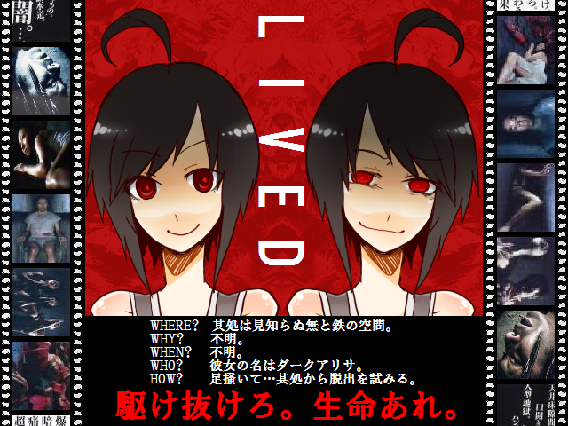

| LIVED -Original Long Version- |
 |
| Download:8.9MB / Feel-BBS |
| Author:ちんちん |
| Tool:RPG2000 |
| Message: 【本作のテーマは「生の肯定」。 世の中って嫌な事がいっぱいですよね。 僕も毎日毎日、嫌な事ばっかで正直しんどいです。 息苦しくて何だか生き難いけれども良い事だって沢山あります。 取り敢えず生きてた方が良いんじゃね？ どうもしんどいけど前に向かって進んでみたら何か変わるかもしれなくね？ そう思ってｔｋｔｋしました。 駆け抜けろ。 僕に貴方に私達に生命あれ。】 |